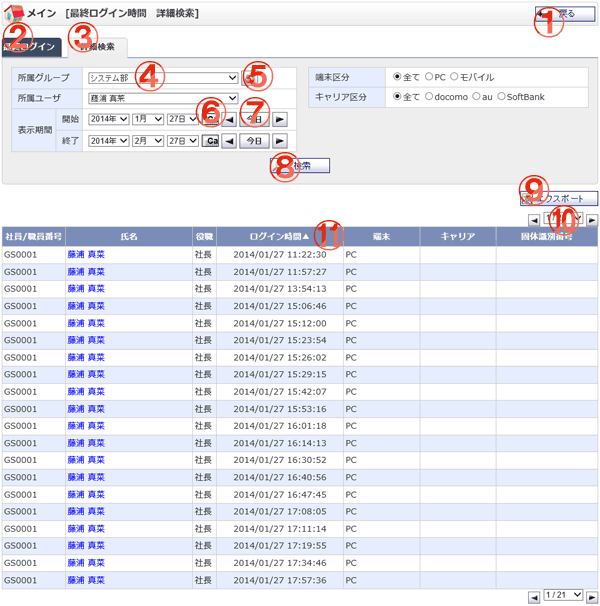

各ユーザのGroup Sessionログイン時間を検索し、一覧表示します。

機能説明
戻るボタン遷移元の画面へ遷移します。 |
最終ログインタブ最終ログイン時間を一覧表示します。 |
|---|---|
詳細検索タブログイン時間を検索します。 |
表示グループコンボ登録されているグループの一覧が表示されます。このコンボで選択されたグループに所属するユーザの情報が最終ログイン時間一覧に表示されます。 |
グループボタンポップアップでグループ選択画面が開きます。 |
カレンダーボタンポップアップでカレンダー画面が開きます。カレンダー画面で日付をクリックすると、クリックした日付がセットされます。 |
前日・今日・翌日ボタン年・月・日コンボを切り替えます。 |
検索ボタン入力した条件でログイン履歴の検索を行います。該当結果が一覧へ表示されます。入力内容に不備がある場合エラーメッセージが表示されます。 |
エクスポートボタンCSV形式で最終ログイン時間をダウンロードします。 |
ページコンボ・前頁・次頁ページコンボで任意のページへ、前頁アイコンクリックで前のページへ、次頁アイコンクリックで次のページへそれぞれ遷移します。 |
ヘッダタイトルクリックによって一覧のソート条件の切り替えを行います。現在ソート条件になっている項目をもう1度クリックすると「昇順」「降順」が切り替わります。 |